Một hộp số tự động có cấp với biến mô thủy lực gồm các bộ phận chính sau:
Bộ biến mô: Để truyền và khuyếch đại mômen do động cơ sinh ra.
Bộ truyền bánh răng hành tinh: Để chuyển số như giảm tốc, đảo chiều, tăng tốc, và vị trí số trung gian.
Bộ điều khiển thủy lực: Để điều khiển áp suất thuỷ lực sao cho bộ biến mô và bộ truyền bánh răng hành tinh hoạt động êm.
ECU động cơ và ECT: Để điều khiển các van điện từ và bộ điều khiển thuỷ lực nhằm tạo ra điều kiện chạy xe tối ưu. Hộp số này sử dụng áp suất thuỷ lực để tự động chuyển số theo các tín hiệu điều khiển của ECU. ECU điều khiển các van điện từ theo tình trạng của động cơ và của xe do các bộ cảm biến xác định, do đó điều khiển áp suất thuỷ lực.
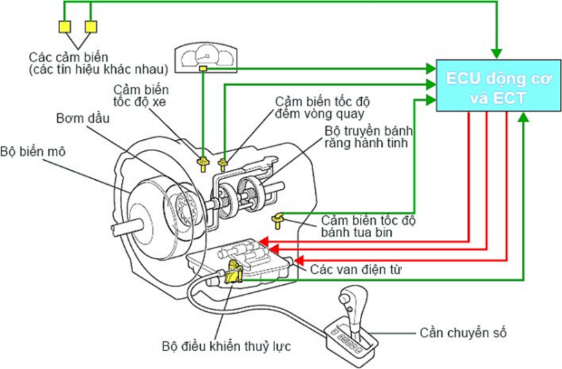
Hình 4.2. Cấu tạo hộp số tự động có cấp với biến mô thủy lực
Sau đây chúng ta sẽ nghiên cứu từng bộ phận chính của hộp số tự động có cấp với biến mô thủy lực.
a. Bộ biến mô (Biến mô thủy lực)
Bộ biến mô thủy lực trong hộp số tự động nhằm thực hiện các chức năng sau:
- Tăng mômen do động cơ tạo ra;
- Đóng vai trò như một ly hợp thuỷ lực để truyền (hay không truyền) mômen từ động cơ đến hộp số.
- Hấp thụ các dao động xoắn của động cơ và hệ thống truyền lực.
- Có tác dụng như một bánh đà để làm đồng đều chuyển động quay của động cơ.
- Dẫn động bơm dầu của hệ thống điều khiển thuỷ lực.
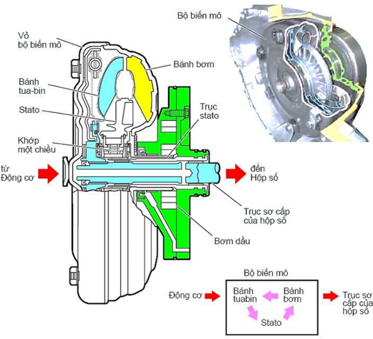
Hình 4.3. Cấu tạo biến mô thủy lực
Bộ biến mô gồm bánh bơm, bánh tuabin, khớp một chiều, stato và vỏ biến mô chứa tất cả các bộ phận đó. Bộ biến mô được điền đầy hộp số tự động do bơm dầu cung cấp. Động cơ quay và bánh bơm quay, và dầu bị đẩy ra từ bánh bơm thành một dòng mạnh làm quay bánh tua bin.
Bánh bơm được gắn liền với vỏ biến mô, có rất nhiều cánh có biên dạng cong được bố trí theo hướng kính ở bên trong. Vành dẫn hướng được bố trí trên cạnh trong của cánh bơm để dẫn hướng cho dòng chảy của dầu. Vỏ biến mô được nối với trục khuỷu của động cơ qua tấm dẫn động.
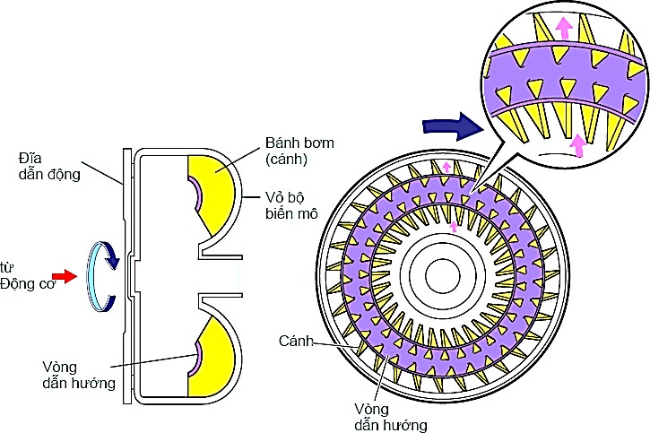
Hình 4.4. Bánh bơm
Bánh tua-bin: cũng như cánh bơm, rôto tuabin có rất nhiều cánh dẫn được bố trí bên trong rôto tuabin. Hướng cong của các cánh dẫn này ngược chiều với cánh dẫn trên cánh bơm. Rôto tuabin được lắp với trục sơ cấp của hộp số.
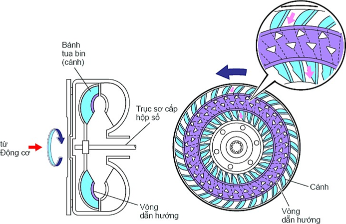
Hình 4.5. Bánh tua – bin
Stato được đặt giữa bánh bơm và bánh tuabin. Nó được lắp trên trục stato, trục này lắp cố định vào vỏ hộp số qua khớp một chiều. Các cánh dẫn của stato nhận dòng dầu khi nó đi ra khỏi bánh tuabin và hướng cho nó đập vào mặt sau của cánh dẫn trên bánh bơm làm cho bánh bơm được cường hoá.
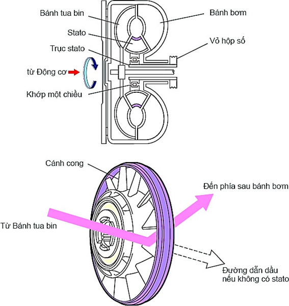
Hình 4.6. Stato và khớp một chiều
Khớp một chiều cho phép stato quay cùng chiều với trục khuỷu động cơ. Tuy nhiên nếu stato có xu hướng quay theo chiều ngược lại, khớp một chiều sẽ khoá stato lại và không cho nó quay. Do vậy stato quay hay bị khoá phụ thuộc vào hướng của dòng dầu đập vào các cánh dẫn của nó.
Khi vành ngoài của khớp một chiều quay theo hướng mũi tên A ở Hình 4.7nó sẽ ép vào phần đầu của các con lăn. Do khoảng cách l1 ngắn hơn l nên con lăn bị nghiêng đi cho phép vành ngoài quay.
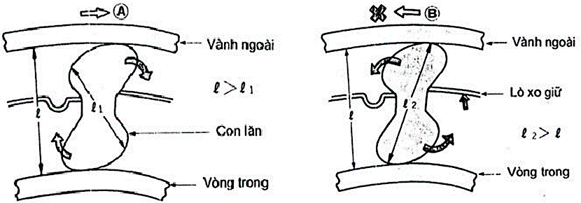
Hình 4.7. Cấu tạo khớp một chiều
Khi vành ngoài quay theo chiều ngược lại theo hướng mũi tên B ở hình 3.57, con lăn không thể nghiêng đi do khoảng cách l2 dài hơn l. Kết quả làm cho con lăn có tác dụng như một miếng chêm khoá vành ngoài và giữ không cho nó quay. Lò xo giữ được lắp thêm để trợ giúp cho con lăn, nó giữ cho các con lăn luôn nghiêng một chút theo hướng khoá vành ngoài.
Cơ cấu ly hợp khóa biến mô: khi ô tô chuyển động trên đường tốt, vận tốc của ô tô khá cao, khi này mômen cản chuyển động nhỏ nên số vòng quay của bánh tuabin xấp xỉ bằng số vòng quay của bánh bơm. Biến mô đã làm việc ở chế độ ly hợp (stato được giải phóng) nhưng hiệu suất còn nhỏ hơn 1 (từ 0,8 đến 0,9). Để hiệu suất truyền động của biến mô đạt giá trị cao nhất, ở chế độ này người ta sử dụng một ly hợp để khoá cứng biến mô.
Khi cơ cấu ly hợp khóa biến mô hoạt động đường truyền mômen từ động cơ tới hộp số được thực hiện trực tiếp thông qua ly hợp khoá biến mô như truyền qua một ly hợp ma sát bình thường và lúc đó hiệu suất truyền bằng 1.
Ly hợp khóa biến mô được lắp trên moayơ của bánh tuabin và nằm ở phía trước của rôto tuabin. Trong ly hợp khóa biến mô cũng bố trí lò xo giảm chấn để khi ly hợp truyền mômen được êm dịu, không gây va đập. Vật liệu ma sát ở ly hợp này cũng giống như vật liệu ma sát sử dụng cho phanh và đĩa ly hợp. Khi ly hợp khoá biến mô hoạt động, nó sẽ quay cùng với cánh bơm và rôto tuabin. Việc đóng và mở của ly hợp khoá biến mô được quyết định bởi sự thay đổi của hướng dòng dầu thủy lực trong biến mô.
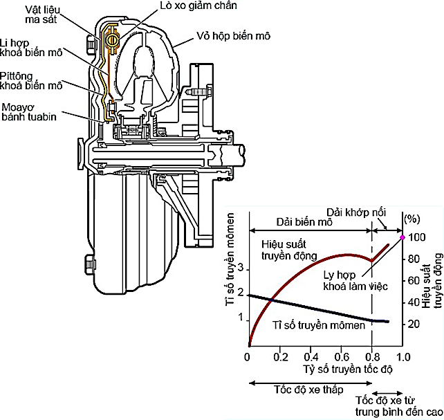
Hình 4.8. Cơ cấu ly hợp khóa biên mô
b. Bộ bánh răng hành tinh
Bộ bánh răng hành tinh trong hộp số tự động có các chức năng sau:
- Cung cấp một số tỉ số truyền để thay đổi mômen và tốc độ của bánh xe chủ động phù hợp với sức cản của đường và nhu cầu sử dụng tốc độ của ô tô.
- Đảo chiều quay của trục ra để thực hiện lùi xe.
- Tạo vị trí trung gian cho phép xe dừng lâu dài khi động cơ vẫn hoạt động.
Cấu tạo chung của bộ bánh răng hành tinh:
Một bộ các bánh răng hành tinh là một loạt các bánh răng ăn khớp với nhau trong đó bao gồm: Bánh răng mặt trời, bánh răng bao, các bánh răng hành tinh và cần dẫn.
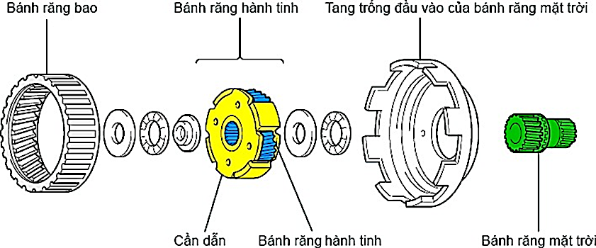
Hình 4.9. Cấu tạo chung bộ bánh răng hành tinh
Bánh răng mặt trời có vành răng ngoài và được đặt trên một trục quay. Bánh răng mặt bao có vành răng trong và cũng được đặt trên một trục quay khác đồng trục với bánh răng mặt trời. Các bánh răng hành tinh nằm giữa và ăn khớp với bánh răng mặt trời và bánh răng bao. Trục của các bánh răng hành tinh được liên kết với một cần dẫn cũng có trục quay đồng trục với bánh răng bao và bánh răng mặt trời. Như vậy ba trục có cùng đường tâm quay ở dạng trục lồng và được gọi là đường tâm trục của cơ cấu hành tinh. Các trục đều có thể quay tương đối với nhau. Số lượng bánh răng hành tinh có thể là 2, 3, 4 tuỳ thuộc vào cấu trúc của chúng. Các bánh răng hành tinh vừa quay xung quanh trục của nó vừa quay xung quanh trục của cơ cấu hành tinh.
Nguyên lý hoạt động của cơ cấu hành tinh
Một cơ cấu hành tinh bao gồm ba loại bánh răng: Một bánh răng mặt trời, một bánh răng bao và một số bánh răng hành tinh lắp trên một cần dẫn. Cơ cấu hành tinh là cơ cấu ba bậc tự do tương ứng với ba chuyển động của các trục bánh răng mặt trời, bánh răng bao và cần dẫn. Vì vậy để có một chuyển động từ đầu vào đến đầu ra thì một trong ba bậc tự do trên phải được hạn chế. Nguyên lý truyền động của cơ cấu hành tinh được thể hiện qua ba trường hợp sau đây:
* Giảm tốc:
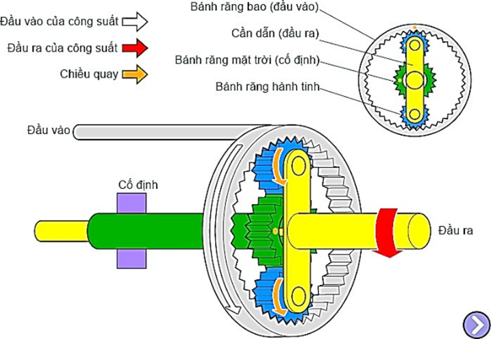
Hình 4.10. Chế độ giảm tốc
Ở chế độ này, trạng thái và tên gọi của các phần tử trong cơ cấu hành tinh được thể hiện như sau:
Đầu vào: Bánh răng bao (phần tử chủ động)
Đầu ra: Cần dẫn (Phần tử bị động)
Cố định: Bánh răng mặt trời
Khi bánh răng bao quay theo chiều kim đồng hồ, các bánh răng hành tinh sẽ quay xung quanh bánh răng mặt trời trong khi cũng quay quanh trục của nó theo chiều kim đồng hồ. Điều đó làm cho tốc độ quay của cần dẫn giảm xuống tuỳ thuộc số răng của bánh răng bao và bánh răng mặt trời
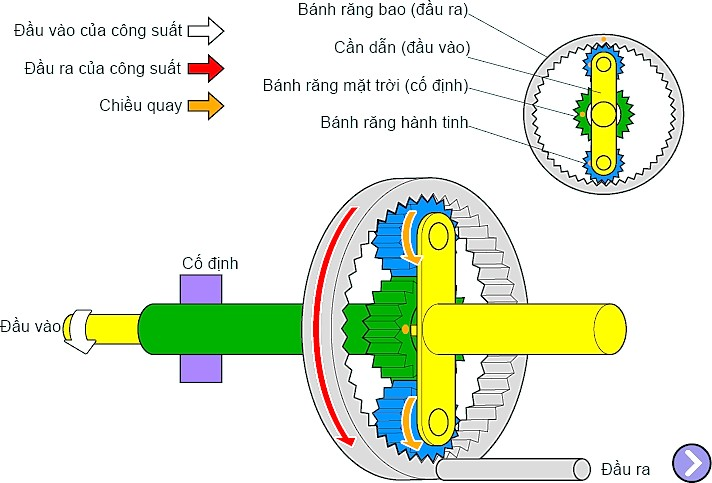
* Tăng tốc:
Hình 4.11. Chế độ tăng tốc
Ở chế độ này, trạng thái và tên gọi của các phần tử trong cơ cấu hành tinh được thể hiện như sau:
Đầu vào: Cần dẫn (phần tử chủ động)
Đầu ra: Bánh răng bao (phần tử bị động)
Cố định: Bánh răng mặt trời
Khi cần dẫn quay theo chiều kim đồng hồ, các bánh răng hành tinh sẽ quay xung quanh bánh răng mặt trời trong khi chúng cũng quay quanh trục của nó theo chiều kim đồng hồ. Điều đó làm cho bánh răng bao tăng tốc tuỳ thuộc số răng của bánh răng bao và bánh răng mặt trời
* Đảo chiều:
Ở chế độ này, trạng thái và tên gọi của các phần tử trong cơ cấu hành tinh được thể hiện như sau:
Đầu vào: Bánh răng mặt trời (phần tử chủ động)
Đầu ra: Bánh răng bao (phần tử bị động)
Cố định: Cần dẫn
Khi bánh răng mặt trời quay theo chiều kim đồng hồ, các bánh răng hành tinh lúc này do cần dẫn bị cố định nên tự quay quanh trục của nó theo chiều ngược chiều kim đồng hồ. Điều đó làm cho bánh răng bao cũng quay ngược chiều kim đồng hồ. Lúc này bánh răng bao giảm tốc phụ thuộc vào số răng của bánh răng bao và bánh răng mặt trời
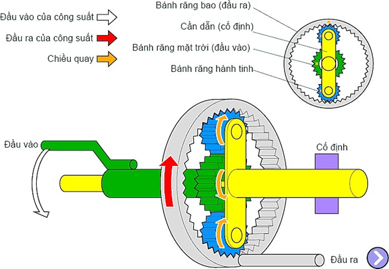
Hình 4.12. Chế độ đảo chiều
* Nối trực tiếp:
Ở chế độ này, trạng thái và tên gọi của các phần tử trong cơ cấu hành tinh được thể hiện như sau:
Đầu vào: Bánh răng mặt trời, bánh răng bao
Đầu ra: Cần dẫn
Do bánh răng bao và bánh răng mặt trời quay cùng nhau với cùng một tốc độ nên cần dẫn cũng quay với cùng tốc độ đó.
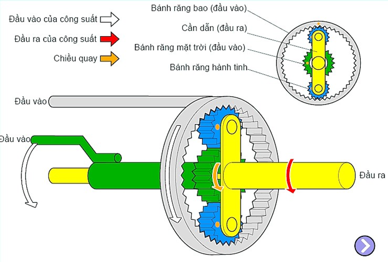
Hình 4.13. Chế độ nối trực tiếp
Các phanh và ly hợp
Trong hộp số tự động không phải chỉ có một bộ truyền hành tinh mà có thể hai hoặc nhiều hơn. Vì vậy để có được các tỉ số truyền khác nhau, tức là để cố định hoặc giải phóng một phần tử trong cơ cấu hành tinh người ta phải sử dụng các phanh hoặc ly hợp.
Phanh hãm:
Phanh hãm giữ cố định một trong các bộ phận của bộ truyền hành tinh để đạt được tỉ số truyền cần thiết. Có 2 loại phanh:
+ Phanh dải (B1): Ở loại này, một dải phanh được bao quanh trống phanh, trống này được gắn với một trong các bộ phận của bộ truyền hành tinh. Khi phanh, dải phanh cố định sẽ xiết vào trống phanh để giữ cố định bộ phận đó của bộ truyền hành tinh.
Một đầu của dải phanh được hãm chặt vào vỏ hộp số bằng một chốt, còn đầu kia tiếp xúc với píttông phanh qua cần đẩy píttông chuyển động bằng áp suất thuỷ lực. Pít tông phanh có thể chuyển động trên cần đẩy píttông nhờ việc nén các lò xo. Người ta bố trí các cần đẩy pít tông có hai chiều dài khác nhau để có thể điều chỉnh khe hở giữa dải phanh và trống phanh.
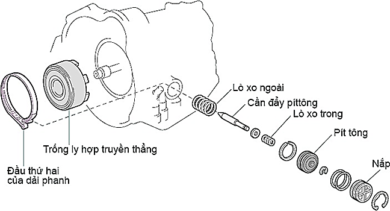
Hình 4.14. Cấu tạo phanh dải
* Hoạt động của phanh dải:
Khi áp suất thuỷ lực tác động lên pít tông thì pít tông di chuyển sang phía trái trong xi lanh và nén các lò xo. Cần đẩy pít tông chuyển sang bên trái cùng với pít tông và đẩy một đầu của dải phanh. Do đầu kia của dải phanh bị cố định vào vỏ hộp số nên đường kính của dải phanh giảm xuống và dải phanh xiết vào trống làm cho nó không chuyển động được. Tại thời điểm này, sinh ra một lực ma sát lớn giữa dải phanh và trống phanh làm cho trống phanh hoặc một phần tử của bộ truyền bánh răng hành tinh không thể chuyển động được.
Khi dầu có áp suất được dẫn ra khỏi xi lanh thì pít tông và cần đẩy pít tông bị đẩy ngược lại do lực của lò xo ngoài và trống được dải phanh nhả ra. Ngoài ra, lò xo trong có hai chức năng: để hấp thu phản lực từ trống phanh và để giảm va đập sinh ra khi dải phanh xiết trống phanh.
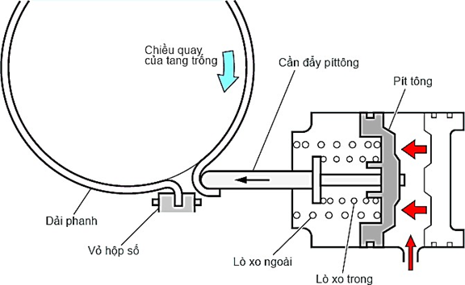
Hình 4.15. Hoạt động phanh dải
+ Phanh nhiều đĩa ướt (B2 và B3):
Ở loại phanh này các đĩa thép được lắp cố định với vỏ hộp số và đĩa ma sát quay cùng một khối với từng bộ phận của bộ truyền hành tinh. Khi cần phanh, chúng bị ép vào nhau để giữ cho một trong các bộ phận của bộ truyền hành tinh cố định.
Phanh B2 hoạt động thông qua khớp một chiều số 1 để ngăn không cho các bánh răng mặt trời trước và sau quay ngược chiều kim đồng hồ. Các đĩa ma sát được gài bằng then hoa vào vòng lăn ngoài của khớp một chiều số 1 và các đĩa thép được cố định vào vỏ hộp số. Vòng lăn trong của khớp một chiều số 1 (các bánh răng mặt trời trước và sau) được thiết kế sao cho khi quay ngược chiều kim đồng hồ thì nó sẽ bị khoá, nhưng khi quay theo chiều kim đồng hồ thì nó có thể xoay tự do. Mục đích của phanh B3 là ngăn không cho cần dẫn sau quay. Các đĩa ma sát ăn khớp với moay ơ B3 của cần dẫn sau. Moay ơ B3 và cần dẫn sau được bố trí liền một cụm và quay cùng nhau. Các đĩa thép được cố định vào vỏ hộp số.
Số lượng các đĩa ma sát và đĩa thép khác nhau tuỳ theo kiểu hộp số tự động. Thậm chí trong các hộp số tự động cùng kiểu, số lượng đĩa ma sát cũng có thể khác nhau tuỳ thuộc vào động cơ được lắp với hộp số.
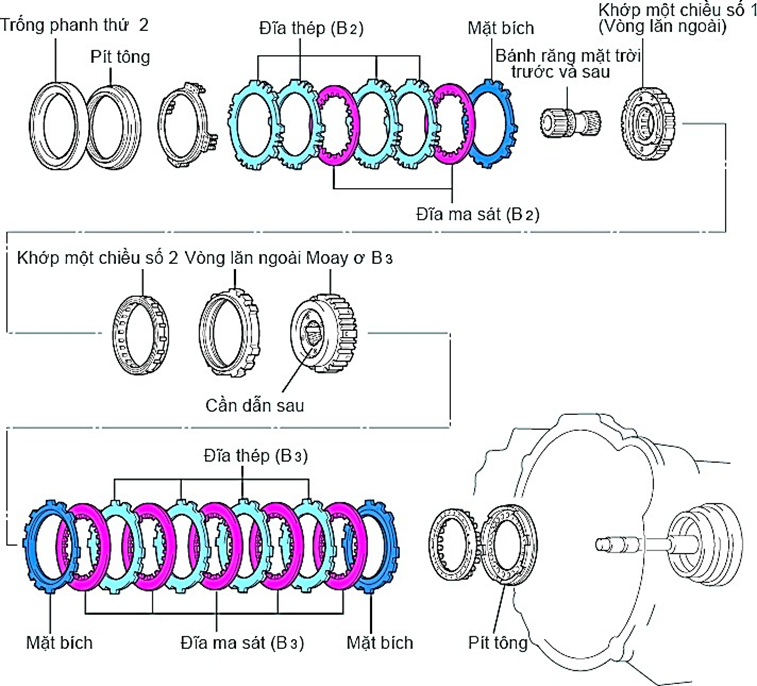
Hình 4.16. Cấu tạo phanh nhiều đĩa ướt
* Hoạt động của phanh nhiều đĩa ướt (B2 và B3)
Ăn khớp:
Khi áp suất thuỷ lực tác động lên xi lanh pít tông sẽ dịch chuyển và ép các đĩa thép và đĩa ma sát tiếp xúc với nhau. Do đó tạo nên một lực ma sát lớn giữa mỗi đĩa thép và đĩa ma sát. Kết quả là cần dẫn hoặc bánh răng mặt trời bị khoá vào vỏ hộp số. Khi dầu có áp suất được xả ra khỏi xi lanh thì pít tông bị lò xo phản hồi đẩy về vị trí ban đầu của nó và làm nhả phanh.
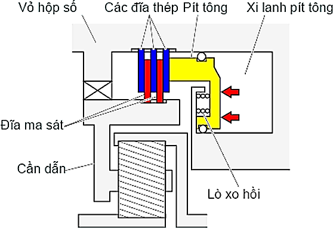
Hình 4.17. Hoạt động phanh nhiều đĩa ướt ở chế độ ăn khớp
Nhả khớp:
Khi dầu có áp suất được xả ra khỏi xi lanh thì pít tông bị lò xo phản hồi đẩy về vị trí ban đầu của nó và làm nhả phanh.
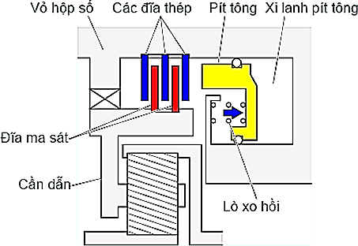
Hình 4.18. Hoạt động phanh nhiều đĩa ướt ở chế độ nhả khớp
Ly hợp (C2 và C3):
Ly hợp dùng để nối truyền động từ biến mô đến các bộ truyền hành tinh. Ly hợp nhiều đĩa loại ướt thường được sử dụng trong hộp số tự động. Nó bao gồm một số đĩa thép và một số đĩa ma sát được bố trí xen kẽ với nhau. Để điều khiển đóng mở ly hợp người ta sử dụng áp suất thuỷ lực.
Ly hợp C1 hoạt động để truyền công suất từ bộ biến mô tới bánh răng bao trước qua trục sơ cấp. Các đĩa ma sát và đĩa thép được bố trí xen kẽ với nhau. Các đĩa ma sát được nối bằng then với bánh răng bao trước và các đĩa thép được khớp nối bằng then với tang trống của ly hợp số tiến. Bánh răng bao trước được lắp bằng then với bích bánh răng bao, còn tang trống của ly hợp số tiến được lắp bằng then với moay ơ của ly hợp số truyền thẳng.
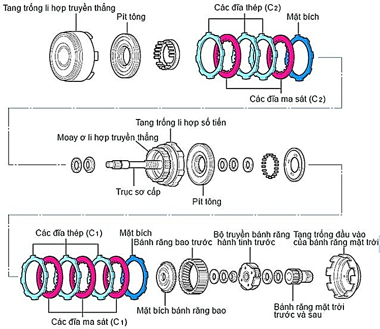
Hình 4.19. Cấu tạo ly hợp
Ly hợp C2 truyền công suất từ trục sơ cấp tới tang của ly hợp truyển thẳng (bánh răng mặt trời). Các đĩa ma sát được lắp bằng then với moay ơ của ly hợp truyền thẳng còn các đĩa thép được lắp bằng then với tang trống ly hợp truyền thẳng. Tang trống ly hợp truyền thẳng ăn khớp với tang trống đầu vào của bánh răng mặt trời và tang trống này lại được ăn khớp với các bánh răng mặt trời trước và sau. Kết cấu được thiết kế sao cho ba cụm đĩa ma sát, đĩa thép và các tang trống quay cùng với nhau..
* Hoạt động của ly hợp (C1 và C2)
Ăn khớp (C1)
Khi dầu có áp suất chảy vào trong xi lanh pít tông, nó sẽ đẩy viên bi van của pít tông đóng kín van một chiều và làm pít tông di động trong xi lanh và ép các đĩa thép tiếp xúc với các đĩa ma sát. Do lực ma sát lớn giữa các đĩa thép và đĩa ma sát nên các đĩa thép dẫn và đĩa ma sát bị dẫn quay cùng một tốc độ. Có nghĩa là ly hợp được ăn khớp, trục sơ cấp được nối với bánh răng bao,và công suất từ trục sơ cấp được truyền tới bánh răng bao.
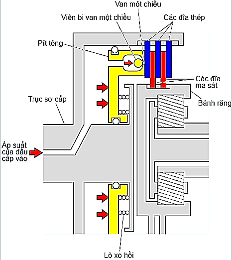
Hình 4.20. Chế độ ăn khớp ly hợp
Nhả khớp (C1):
Khi dầu có áp suất được xả thì áp suất dầu trong xi lanh giảm xuống. Điều này cho phép viên bi rời khỏi van một chiều nhờ lực li tâm tác động lên nó,và dầu trong xi lanh được xả ra ngoài qua van một chiều.
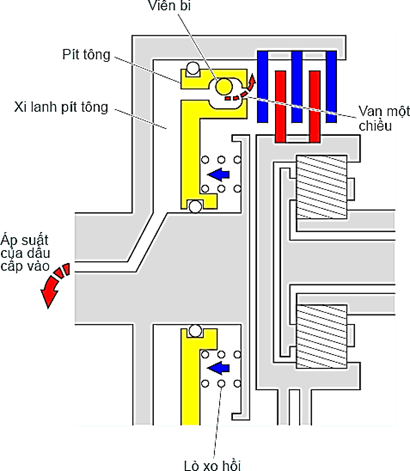
Hình 4.21. Chế độ nhả khớp ly hợp
Ly hợp triệt tiêu áp suất dầu thủy lực ly tâm: trong cơ cấu của một ly hợp thông thường để ngăn cản sự sinh ra áp suất do lực ly tâm tác động lên dầu trong buồng áp suất dầu của pít tông khi nhả ly hợp, người ta bố trí một viên bi một chiều để xả dầu. Do đó, trước khi có thể tác động tiếp vào ly hợp cần có thời gian để dầu điền đầy buồng áp suất dầu của pít tông.
Trong khi chuyển số, ngoài áp suất do thân van kiểm soát, thì áp suất tác động lên dầu trong buồng áp suất dầu của pít tông cũng có ảnh hưởng, mà áp suất này lại phụ thuộc vào sự dao động tốc độ của động cơ. Để triệt tiêu ảnh hưởng này người ta bố trí đối diện với buồng áp suất thuỷ lực của pít tông một khoang triệt tiêu áp suất dầu thuỷ lực.
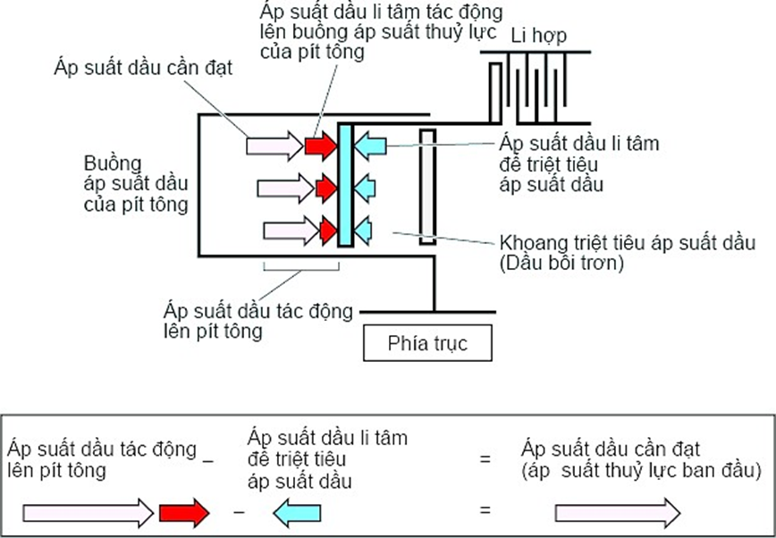
Hình 4.22. Triệt tiêu áp suất dầu ly tâm
Bằng việc sử dụng dầu bôi trơn như dầu dùng cho trục thì một lực li tâm tương đương sẽ tác động, làm triệt tiêu lực li tâm tác động lên bản thân pít tông. Vì vậy, không cần phải xả chất lỏng bằng cách dùng viên bi mà vẫn đạt được một đặc tuyến thay đổi tốc độ êm và rất nhạy.
Khớp một chiều:
Khi bộ truyền bánh răng hành tinh được thiết kế mà không tính đến va đập khi chuyển số thì B2, F1 và F2 là không cần thiết. Chỉ cần C1, C2, B1 và B3 là đủ. Ngoài ra, rất khó thực hiện việc áp suất thuỷ lực tác động lên phanh đúng vào thời điểm áp suất thuỷ lực vận hành li hợp được xả.
Do đó, khớp một chiều số 1 (F1) tác động qua phanh B2 để ngăn không cho bánh răng mặt trời trước và sau quay ngược chiều kim đồng hồ. Khớp một chiều số 2 (F2) ngăn không cho cần dẫn sau quay ngược kim đồng hồ. Vòng lăn ngoài của khớp một chiều sô 2 được cố định vào vỏ hộp số. Nó được lắp ráp sao cho nó sẽ khoá khi vòng lăn trong (cần dẫn sau) xoay ngược chiều kim đồng hồ và quay tự do khi vòng lăn trong xoay theo chiều kim đồng hồ.
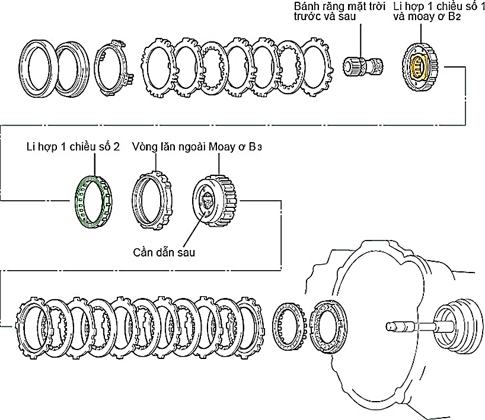
Hình 4.23. Ly hợp và khớp một chiều
Với cách này có thể sử dụng các khớp một chiều để chuyển các số bằng cách luôn ấn hoặc nhả áp suất thuỷ lực lên một phần tử. Nghĩa là, chức năng của khớp một chiều là đảm bảo chuyển số được êm.
Sau đây chúng ta cùng nghiên cứu hoạt động của bộ truyền bánh răng hành tinh sau khi đã tìm hiểu về các cơ cấu truyền mô men (các ly hợp) và các cơ cấu hãm cố định một thành phần của bộ truyền bánh răng hành tinh (các phanh). Ta sẽ giải thích điều kiện hoạt động của mỗi số bằng sơ đồ nguyên lý của bộ truyền bánh răng hành tinh.